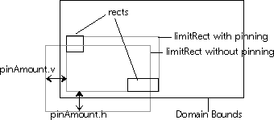

Domain
The Domain class is a general graphics object handler that manages objects in a two and one-half dimensional plane. (The two and one-half dimensions are height, width, and layering.) The Domain classes deal with a set of objects, which are graphical representations in the domain that may or may not be visible. The Domain class stores the objects' positions, dimensions, and client-definable data and is then able to manipulate the objects, return various information about the objects, and manage the display and scrolling of the objects. For example, you may want to know what objects lie within a given rectangle, what objects are completely enclosed within a rectangle, what object is closest to a given point, or what objects intersect. Common uses for the Domain class include managing icons on a user's workspace or managing objects in a drawing program. Anywhere groups of graphical objects need to be stored and organized, the Domain class can be used.
Figure 19 shows the overall view of a domain. The domain is the complete bounding rectangle where any domain objects are or can be. The bounding rectangle can have defined boundaries; or it can be an infinite sheet where objects can be placed anywhere, and the size of the domain is dynamic.
Only part of the sheet is visible at one time. The domain view is the visible area and can be thought of as a window placed within a dialog from which you see the domain. You can move (scroll) the dialog underneath the view rectangle to view any part of the domain. The view rectangle is sized in dialog coordinates and can be moved and resized at any time. (Refer to "Domain Coordinate System" for more information on dialog coordinates.)
The limit rectangle represents the smallest rectangle that completely encompasses all objects in the domain. It is used primarily for calculating dynamic domain bounds and for dragging objects.
A domain can be scrolled so that any part of the domain can be viewed. The scroll offset is represented by the offset from the origin of the domain.
- NOTE: The origin of a domain is not necessarily (0,0).
Figure 19. The domain
Domain objects are never added or removed from a domain view; rather, they are added and removed from the domain, which notifies all observers of the domain change. The observers then update their view of the domain.
Any number of selections can be created for a domain object, which is what happens when multiple domain views of the same domain are created. Each domain view creates a selection for the domain it is displaying. When a selection changes via SelectObjects or SelectAll, then all observers are called with the observer select operation. Only observers that own the selection being changed should acknowledge the selection change.
Fixed bounds are straightforward. The domain occupies a fixed rectangular area, and only objects within the rectangular area are visible. Objects can, however, be moved outside the domain bounds. Fixed domain bounds can be resized, but the resize must be done explicitly.
Virtual bounds are bounds that are determined by the objects in the domain. Virtual bounds allow the bounds to continuously adjust to the domain's contents. By definition, the bounds of the domain are at all times the bounding rectangle of all objects in the domain. For example, the icons in a window would typically use virtual bounds. If an icon is moved outside the current domain bounds, the domain bounds are recalculated, and the scroll bars are visually adjusted.
A domain can also have a virtual buffer, which is simply the amount to extend the rectangle bounding all objects when calculating the virtual domain bounds. The virtual buffer is an attribute of a domain. It can be specified when creating a domain or changed at any time by changing the virtual buffer attribute.
Figure 20. Domain with virtual buffer
The virtual buffer allows a certain amount of space to be present between an extreme-most object and the edge of the domain. If there is no virtual buffer (values set to zero), then you cannot scroll past the edge of the extreme-most object when scrolling to the edge of the domain.
Figure 21. Domain with and without a virtual buffer
The vdomainObject holds all of the information associated with an object. This includes the object's location, object type, state, layering position, and client-defined data. There is a vdomainObject for every object in the domain.
All objects have bounds and a type, which are attributes of the object. Other attributes, such as selected, hidden, opaque, and so on, can also apply to objects. The bounds for an object consist of the complete bounding rectangle for the object in domain coordinates. (Refer to "Domain Coordinate System" for more information.) The bounding rectangle should include any areas that will be used to draw the object, including any area needed to draw the selection indicator.
The object type is a client-defined constant that indicates the "type" of object. How this field is used is completely up to the client program. The type field is often used to distinguish between different objects, such as polygons, curves, text fields, and so on, so that drawing functions and intersect functions know what to draw or select.
There are many operations that can be performed on objects. Objects can be hidden, anchored, connected to other objects, selected, unselected, moved, resized, and so on.
Connectivity allows you to manipulate a group of objects as one object. If you select and move an object, all connected objects are also moved. An example of this is icons with text labels. You can create two objects, a text object and an icon object, and then connect them.
When two objects are connected that are already connected to other objects, all objects become connected to each other.
Figure 22. Domain and dialog coordinate space
This example shows the domain coordinate system with a top left orientation and no user matrix. The orientation is the starting point for calculating further coordinates. You can change the coordinate system to have a bottom left orientation with the SetOrientation routine.
The scroll offset of a domain view is the amount the view area has been scrolled. The translation and the view area can be obtained via vdomainviewGetScrollTranslation and vdomainviewGetViewArea. All object bounds are in domain coordinates. In customized drawing methods, the drawing coordinate system is already set up for you. All you need to do is draw the objects or rectangles at their given positions.
In this example, the domain origin (top left corner) is -80, 20. The X translation is given as 100. This means that the x-coordinate of the view area is 20 (-80 + 100). The Y translation is also given as 100. This means that the y-coordinate of the view area is 120 (20 + 100). The coordinates of the square object partially in the right-hand corner of the view area are given as 200, 100, 40, 40. The last two digits indicate the width and height of the object. Given the coordinates of the view area and the dimensions of the square object, you can see how its x- and y-coordinates of 200 and 100 were derived.
Figure 23 shows a domain and domain view very similar to the previous example shown in Figure 22, but with a user-specified translation matrix with some rotation and scaling applied. As with the previous example, the orientation for the domain has been set to top left. This example is also showing a situation where the scroll offset (which is in domain coordinate space) has a negative component, and the domain rect of the domain view is viewing a region of space outside of the actual domain's bounds, but within the viewable area.
Figure 23. User-translated coordinate space
Figure 24. The domain grid
The event handler for each event is sent a specific structure (given below) that describes the particular event. Some events allow you to cancel the event by returning the value vFALSE from the event handler. Normally, you return vTRUE to indicate successful handling of the event.
An observer is created via vdomainCreateObserver or vdomainCreateObserverOfClass, where the latter takes as a parameter an observer class that contains monitoring methods for domain operations.Domain and a domain views both provide a default observer class that handles displaying the domain. You can override the methods in the class to provide new or additional functionality.
You can also create, modify, and delete object sets manually. You can search object sets to determine if a specific object exists in the object set.
Coordinates may be transformed from one space to another via the functions:
Here is a rundown on all of the values representing various aspects of domains and domain views in the different coordinate spaces:
The default vdomainviewSCROLL method in the default vdomainview class is implemented using vdomainviewSetScrollTranslation, so subclasses which need to affect scrolls should override vdomainviewSET_SCROLL_TRANSLATION rather than vdomainviewSCROLL. In addition, all scrolls performed by the domain class (as a result of user interaction, or other entry points) make use of vdomainviewSetScrollTranslation rather than vdomainviewScroll.
A drawing application using domain views to display and edit a domain of drawing objects can override the observer move operation to keep track of the position of annotations for each domain object. The new method is illustrated in Example 44.
Example 44. Overriding the observer move operation
This method allows you to handle more complete selection indicators. The default
DrawSelection member function does nothing; you must override it to provide
application-specific functionality. You do not need to override this method if you
show selection by redrawing the object in a different fashion. Use the DrawObject
method and check the selected state of the object before you draw it.
The pinAmount parameter allows you to return the amount of pinning, if any, that
occurred. As Figure 26 shows, pinning usually occurs when the limitRect
exceeds the bounds of the domain. When handling pinning, you should offset the
outline drawing by the pinning amount. If your application uses external dragging
(refer to the dragMethod parameter in the Constants section of the Galaxy
Application Environment Reference Manual), then the drag outline procedure needs
to handle this case as well.
The default drag outline method inverts the list of rectangles with a line width of
zero and pins when limitRect exceeds the bounds of the domain.
Domain Views
A domain view is a dialog item that handles the display and editing of a domain. The domain view is an observer of a domain, providing an interface to the domain that displays the domain, selects objects, edits the domain, and so on. A domain view uses domain routines to obtain information about objects such as their location, whether or not they are hidden, where the domain bounds are, and so on. This information is then used to display and edit the domain accordingly. Multiple domain views can observe the same domain, and each updates its display appropriately when the domain changes. Selections
Each domain view has a selection that is registered with the domain object; selections belong to the domain. Domain views that observe the same domain can either share the same selection or can each have their own unique selection. The selection can also be indicated in several ways; it is completely up to the creator of the domain view. Domain Bounds
Domain bounds comprise the rectangle (in domain coordinates) that encompasses all objects in a domain. There are two types of domain bounds that a domain handles: fixed bounds and virtual bounds. Domain Objects
The core of the Domain class is how it handles domain objects. This section describes some of the attributes of domain objects and then discusses object layering, object connectivity, and object sets. Object Layering
Every object in the domain resides on a unique layer. All objects are in front of or behind all other objects regardless of whether they actually overlap. Layering affects how objects are drawn and which object is returned for the spatial operations ObjectsInArea and ObjectsAtPoint. In all cases, frontmost objects take precedence; that is, frontmost objects are drawn over all other objects, and spatial operations return frontmost objects first. LayerObjects and ShuffleObjects allow you to move an object or set of objects to the front, to the back, behind, or in front of other objects. Object Connectivity
Objects in a domain can be connected arbitrarily in any manner desired. Connectivity applies only to selecting objects. When you select an object, all connected objects are selected as well, including connected objects that are hidden. For example, if you select a visible object that is connected to objects that are hidden, the hidden objects are selected as well. Object Sets
Most Domain class routines that manipulate objects take an object set as a parameter. The operation is then performed on every object in the set. Also, some Domain class routines return a set of objects. Domain Coordinate System
There are three coordinate spaces of interest when using domain views:
The bounds of the domain specify the location of the origin.
This coordinate space is based on the domain view's parent (usually either a dialog,
or a container).
The domain coordinate space after being transformed through the user matrix (see
vdomainviewSetMatrix). It can be thought of as halfway between the other two
spaces. The scale and rotation are the same as the dialog coordinate space, yet there
exists some translation between user space and dialog space. In the case where no
user matrix has been applied to the domain view, the user space is the exact same as
the domain's coordinate space.
NOTE: When translating from domain space to either user or dialog space when
there is a rotation applied to the user matrix, the two TranslateRect
functions will supply you with the bounding rectangle of the transformed
rectangle.
All of these functions take a direction parameter. Galaxy versions prior to release 2.1 used the directions vdomainviewTO_DIALOG and vdomainviewTO_DOMAIN. These values have been deprecated in favor of the following (self descriptive) values:
Figure 22 provides an example of both the domain and dialog coordinate space. (The user-translated coordinate space is shown in Figure 23.)
vdomainviewDOMAIN_TO_DIALOG
vdomainviewDOMAIN_TO_USER
vdomainviewUSER_TO_DOMAIN
Domain Grid
Every domain has a notion of a grid, which determines the spacing interval within the domain. The grid is used when "snap-to-grid" dragging is active and when objects are being aligned to the grid. vdomainGrid is a primary data type and contains:typedef struct {
int xSpacing;
int ySpacing;
int xSkew;
int ySkew;
} vdomainGrid;
The xSpacing and ySpacing fields are the amount of space between grid locations in the X and Y directions, respectively. The xSkew and ySkew fields allow for greater grid control by letting you offset every other grid location by the skew amount. xSkew is the amount to skew in the X direction and ySkew is the amount to skew in the Y direction. Domain View Events
Domain view events are domain view actions, such as dragging, moving, selecting, and so on. The Domain class provides domain event handlers for all Domain class events. These handlers are called whenever the event occurs in a domain view. Most events notify you after the event has taken place. Some, however, notify you before the event occurs and let you cancel the event if desired. Observers
A domain can have observers, which are objects that monitor the operations performed on the domain. An observer receives notify events from the domain any time it changes. Observers can perform tasks as simple as waiting for a specific object to be added to the domain or as complex as displaying and editing the domain. A domain can have multiple observers, which allow multiple dynamic views of the same domain. For example, a domain editing window can create split views by creating a view for each editing pane that monitors the same domain. A domain view is an example of an observer, because it monitors the domain and updates and displays the domain in its own way. Key Functionality
The number of objects in an object set is obtained by GetObjectSetCount. The objects in an object set are retrieved by using the object set iterator routines. For example, to create an array of rectangles containing the bounds of all objects in an object set: vrect *rectArray, *rptr;
vdomainObject *object;
vdomainObjectSetIterator iterator;
rptr = rectArray =
(vrect *) vmemAlloc(sizeof(vrect) *
vdomainGetObjectSetCount(objectSet));
vdomainInitObjectSetIterator(&iterator, objectSet);
while (vdomainNextObjectSetIterator(&iterator)) {
object =
vdomainGetObjectSetIteratorObject(&iterator);
*(rptr++) = *vdomainGetObjectBounds(domain, object);
}
vdomainDestroyObjectSetIterator(&iterator);
There are many times when you have just one object to operate on. In these cases, use ObjectToSet to convert the object to an object set. This routine returns a pointer to the object set. ObjectToSet is actually a macro and is extremely fast.
vdomainviewTranslatePointLong
vdomainviewTranslateRect
vdomainviewTranslateRectLong
There are two different ways to do programmatic scrolling. The first is by using vdomainviewScroll. The xPos and yPos parameters should be specified in the domain's coordinate space. Scrolling may also be done using vdomainviewSetScrollTranslation. In that case, the xPos and yPos parameters should be expressed in user translated coordinate space. Since the position parameters are always expressed either relative to the current scroll translation, or relative to the origin of the viewable area, they may be thought of as being in the dialog's coordinate space.
void observerMove(vdomainObserver *observer, vdomainObjectSet
*objectSet, vpoint *newPosition,
int positioning, int before)
{
// The user-defined class "annotation" is a vdialog subclass
// used as a pop-up annotation window.
annotation *aNotes;
vdomainview *domainView;
domainView = vdomainGetObserverData(observer);
vclassSendSuper(myDomainObserverClass, vdomainObserverMOVE,
(observer, objectSet, newPosition,
positioning, before));
if (!before) {
aNotes = (annotation *)
vdomainGetData(vdomainGetObserverOwner(observer));
while (aNotes != NULL) {
if (vdomainFoundInObjectSet(objectSet,
aNotes->object)) {
if (positioning & vdomainX_RELATIVE)
aNotes->position.x += newPosition->x;
else
aNotes->position.x = newPosition->x;
if (positioning & vdomainY_RELATIVE)
aNotes->position.y += newPosition->y;
else
aNotes->position.y = newPosition->y;
}
aNotes = aNotes->next;
}
}
}
Subclassing
Although the Domain class handles most of the basic domain functions, it does require some help from the client in order to draw objects and determine object intersection properly. The domain class and domain view class provide methods that you can override to provide the desired behavior. These methods are described in the following paragraphs.vdomainviewDrawObjectProc
Figure 25. Selection indicator in overlapping objects
The draw object procedure is called when an application needs to draw the object
selected or unselected, based on the selected state of the object. However, you can
override the DrawSelection method (described below) if you want to draw the
selection indicator after the objects have been drawn. The default draw function
does nothing, so unless you install your own draw function, objects will not be
visible.
vdomainviewDrawSelectionProcThe draw selection method is called to draw the selection indicator for objects that
are selected. It is called after all objects are drawn. You should override this method
if you want the selection indicator to be drawn after all objects are drawn. For
example, in a drawing program where two rectangles overlap and the backmost
rectangle is selected via inverting its corners, you want to be able to see any
corners that are obscured by the frontmost object:
vdomainviewBACKGROUND
The background method allows you to draw a background in a domain view. For
example, you may want to draw a grid, draw guidelines, or draw a digitized picture
in the background of domains. The default DrawBackground member function
fills the domain view with its background color; you must override it to provide
application-specific functionality.
vdomainviewDRAW_MARQUEEThe draw marquee procedure method is called when the marquee needs to be
drawn. The marquee rectangle is passed in as a parameter. The default marquee
drawing function highlights the marquee rectangle with a line width of zero:
void vdomainviewDrawMarquee(vdomainview *domainView,
vrect *marqueeRect)
{
int saveLineWidth;
saveLineWidth = vdrawGetLineWidth();
vdrawSetLineWidth(0);
vdrawSetFunction(vdrawFUNC_HILITE);
vdrawRectsStroke(marqueeRect, 1);
vdrawSetLineWidth(saveLineWidth);
vdrawSetFunction(vdrawFUNC_COPY);
}
Be sure to restore any changes to the graphics context that you make.
vdomainviewDRAG_OUTLINE
Figure 26. Pinning
The drag outline method is called when objects in a domain view are dragged, and
their outline needs to be drawn. Based on the DRAG_OUTLINE domain attribute
selected, the rects parameter contains a list of bounding rectangles to use to draw
the outline for the objects being dragged. (Refer to the section "Constants" in the
vdomainview module of the Reference Manual for a list of the DRAG_OUTLINE
attributes.) numRects contains the number of rectangles in the list. The
limitRect parameter contains the bounding rectangle of all objects being
dragged.

vdomainIntersectFunc
The intersect function is called when the domain needs to determine if two
objects overlap each other. The default intersect function compares the two
bounding rectangles of the objects. Override this method if you want to provide a
more intelligent intersection function.
vdomainRectIntersectFuncThe rectangle intersect method is called when the domain needs to determine if a
rectangle intersects an object. The default rectangle intersect function compares
the rectangle with the bounding rectangle of the object. Override this method if
you want to provide a more intelligent rectangle intersection function.
Sample Code
Complete source code demonstrating some of the concepts presented in this chapter is available in your Galaxy distribution in the samples/docsamps directory. Refer to the domain2 sample for a complete listing of a subclasses domainview.
Table of Contents
Help Map
Need help? Contact Visix.